2 · Mô hình tính toán Map-Reduce
Map-Reduce đáp ứng các nhu cầu tính toán trên cụm máy.
Ba máy nối mạng, mỗi máy lưu một phần dữ liệu Xử lý dữ liệu phân tán Đọc và xử lý dữ liệu nằm trên nhiều máy.
Ba tác vụ tiến hành đồng thời Tính toán song song Nhiều máy cùng làm; thêm máy để tăng năng lực xử lý khi bài toán cho phép.
Phép tính và dữ liệu nằm trong cùng một máy Tính toán gần dữ liệu Ưu tiên nơi có dữ liệu để giảm truyền mạng.
Tác vụ được chuyển từ máy lỗi sang máy khác để chạy lại Điều phối và phục hồi tự động Hệ thống phân chia, lập lịch, phát hiện lỗi và chạy lại tác vụ.
Lập trình viên tập trung vào phép tính; hệ thống tổ chức thực thi.
Nguồn: MMDS, Chương 2 , mục 2.2.
Phần Giới thiệu đã nêu nhu cầu; ở đây ta xác định những khả năng Map-Reduce cung cấp. Mô hình cho phép xử lý dữ liệu phân tán bằng nhiều tác vụ chạy song song, ưu tiên nơi có dữ liệu và giao việc tổ chức thực thi cho hệ thống. Tăng số máy có thể tăng năng lực xử lý, nhưng tốc độ còn phụ thuộc truyền mạng, phân bố dữ liệu và phần không song song hóa được. Phục hồi đòi hỏi còn dữ liệu hoặc bản sao cần thiết và tài nguyên để chạy lại; không có nghĩa chịu được mọi lỗi.
Ta sẽ dùng bài toán đếm từ để tìm hiểu các khả năng này được thực hiện như thế nào. Trước hết cần thống nhất chính xác đầu vào và kết quả cần tạo.
Nguồn: MMDS mục 2.2 mở đầu, trang 25, và 2.2.5; Dean–Ghemawat 2004, tóm tắt và mục 3.1, 3.3, 3.4.
Ví dụ: Đếm tần suất xuất hiện từ
Đầu vào
$n$ văn bản $d_1, \dots, d_n$ đã tách từ thống nhất; $V$ là tập các từ xuất hiện.
Đầu ra
Mỗi $w\in V$ có một cặp $(w,c(w))$, với $c(w)$ là tổng số lần xuất hiện.
Gọi $c_i(w)$ là số lần từ $w$ xuất hiện trong $d_i$. Với $w\in V$:
$c(w) = \sum_{i=1}^{n} c_i(w)$
Khó ở quy mô lớn: dữ liệu phân tán có thể vượt bộ nhớ một máy.
Cùng từ ở nhiều máy: cần gộp số đếm, hạn chế truyền toàn bộ văn bản.
Tập văn bản
Mỗi từ một số đếm
Nguồn: MMDS, Chương 2 , mục 2.2.1–2.2.3, ví dụ 2.1–2.2.
Bài toán đếm từ là ví dụ xuyên suốt phần này. Mỗi văn bản đã được tách thành dãy từ theo cùng quy tắc; quy tắc tách từ và chuẩn hóa chữ hoa, dấu câu được coi là đã xác định, không phải nội dung đang giải quyết. Xét hữu hạn $n\geq1$ văn bản $d_i=(w_{i1},\ldots,w_{im_i})$, với $m_i$ là số từ trong văn bản thứ $i$. Gọi $V$ là tập các từ xuất hiện trong toàn bộ các dãy này. Với $w\in V$, đặt $c_i(w)=|\{j\in\{1,\ldots,m_i\}:w_{ij}=w\}|$. Đầu ra là các cặp $(w,c(w))$, mỗi từ đúng một cặp, trong đó $c(w)=\sum_{i=1}^{n}c_i(w)$.
Tần suất trong bài này nghĩa là số lần xuất hiện, không chia cho tổng số từ. Một từ lặp trong cùng văn bản phải được tính từng lần, nên đây không phải số văn bản chứa từ. Văn bản rỗng có mọi số đếm bằng 0; nếu tất cả văn bản rỗng thì $V$ rỗng và không có cặp đầu ra. Các bản sao lưu trữ không được tính như những văn bản mới.
Công thức mô tả kết quả cần đạt, chưa quy định cách cài đặt. Nó nối với phép cộng đã học: cộng các đóng góp của cùng một từ. Khó khăn khi dữ liệu lớn là đọc dữ liệu ở nhiều máy và tập hợp số đếm của cùng từ mà hạn chế chuyển văn bản qua mạng. Các bước tiếp theo sẽ dùng chính bài toán này để giải thích Map, nhóm theo khóa và Reduce.
Nguồn: MMDS 2.2.1–2.2.3, ví dụ 2.1–2.2, trang 25–27. Ký hiệu được viết lại để đặc tả bài toán rõ ràng.
Map và Reduce cho bài toán đếm từ
Hàm Map
Nhận một văn bản $d_i$. Mỗi lần gặp từ $w$, phát một cặp $(w, 1)$.
Map(d_i):
với mỗi lần từ w xuất hiện trong d_i:
phát(w, 1)Một từ xuất hiện nhiều lần thì phát nhiều cặp.
Hàm Reduce
Nhận từ $w$ và danh sách giá trị $L_w$, tính tổng và phát $(w, c(w))$.
Reduce(w, L_w):
c = 0
với mỗi giá trị v trong L_w:
c = c + v
phát(w, c)Mỗi từ cho đúng một cặp kết quả $(w,c(w))$.
Hệ thống nhóm theo khóa: gom tất cả giá trị của cùng từ $w$ vào $L_w$.
Khóa = từ; giá trị $1$ = một lần xuất hiện.
Nguồn cơ chế: MMDS, Chương 2 , mục 2.2.1–2.2.3.
Đầu vào của Map là một văn bản d_i; đầu ra là dãy các cặp (w, 1), giữ nguyên cả các cặp lặp — nếu từ w xuất hiện m lần trong d_i thì có đúng m cặp (w, 1), không gộp trước. Đầu vào của Reduce là cặp (w, L_w) với L_w là danh sách tất cả giá trị 1 ứng với từ w từ mọi tác vụ Map; đầu ra là (w, c(w)) với c(w) là tổng các phần tử của L_w. Nếu w không xuất hiện thì không có nhóm nào cho w và Reduce không được gọi cho w — danh sách rỗng không đi vào bài toán. Tính đúng đắn: vì mỗi lần xuất hiện của w đóng góp đúng một giá trị 1 vào L_w, ta có c(w) = tổng theo i của c_i(w), tức tổng số lần xuất hiện của w trên toàn bộ tập văn bản. Giả sử mỗi số đếm vừa một từ máy và mỗi phép cộng có chi phí đơn vị. Chi phí trong mô hình đếm: duyệt m_i từ của văn bản d_i ở pha Map, và q_w = |L_w| lần phép cộng cho từ w ở pha Reduce; bộ nhớ tích lũy O(1) vì chỉ giữ một biến đếm, chưa tính chi phí lưu bộ đệm trung gian hay văn bản gốc, và chưa tính chi phí truyền thông giữa các máy.
Nguồn: MMDS, Chương 2, mục 2.2.1–2.2.3. Hàm Map được gọi theo từng văn bản; một tác vụ Map có thể gọi hàm này nhiều lần.
Hệ thống phối hợp và phân phối tác vụ
Bộ điều phối chia đầu vào, rồi giao tác vụ cho máy rảnh; ưu tiên nơi có dữ liệu.
Tác vụ Map
Tác vụ Map 1 · Máy 1một phần đầu vào
Tác vụ Map 2 · Máy 2một phần đầu vào
Tác vụ Map 3 · Máy 3một phần đầu vào
Chuyển và nhóm theo từ:cùng từ → cùng tác vụ Reduce.
Tác vụ Reduce
Tác vụ Reduce 1 · Máy 1một số từ
Tác vụ Reduce 2 · Máy 3các từ còn lại
Nguồn cơ chế: MMDS, Chương 2 , mục 2.2; Dean–Ghemawat (2004) , mục 3.3, 3.6.
Ba tác vụ Map được gán cho Máy 1, 2, 3, mỗi tác vụ xử lý từng phần đầu vào; hai tác vụ Reduce được gán cho Máy 1 và Máy 3 — đây chỉ là một ví dụ bố trí minh họa, không phải số liệu hiệu năng. Bộ điều phối chia đầu vào thành nhiều phần và giao mỗi phần cho tác vụ Map. Một tác vụ Map gọi hàm Map cho từng văn bản trong phần được giao. Các cặp đầu ra được chia theo từ vào các phần dành cho từng tác vụ Reduce. Bộ điều phối cung cấp vị trí dữ liệu; máy chạy Reduce lấy dữ liệu trực tiếp từ các máy chạy Map, không truyền toàn bộ qua bộ điều phối. Tất cả các cặp cùng từ w đều đến đúng một tác vụ Reduce; một tác vụ Reduce có thể nhận nhiều từ và hệ thống gọi Reduce cho từng từ một. Việc nhóm và chuyển có thể diễn ra trong khi Map vẫn đang chạy; Reduce cho mỗi từ chỉ chốt kết quả sau khi đã nhận đủ đầu vào của từ đó. Nếu một tác vụ Map lỗi trên một máy, các kết quả trung gian trên máy đó có thể mất và tác vụ phải chạy lại — chi tiết xử lý lỗi không giảng đầy đủ ở đây. Việc Máy 1 xuất hiện ở cả hai pha không có nghĩa là nó đồng thời chạy hai tác vụ trên một lõi xử lý. Cần phân biệt: không đồng nhất hàm với tác vụ, không đồng nhất văn bản với khối dữ liệu, và không gán cố định mỗi từ cho một máy vật lý.
Phân biệt tác vụ logic với các lượt thực thi của nó: hệ thống có thể chạy lại trên máy khác khi lỗi, hoặc chạy thêm một lượt dự phòng khi tác vụ quá chậm. Các lượt dự phòng có thể chạy đồng thời trên cùng đầu vào; đây là dư thừa tính toán, khác với bản sao khối dữ liệu của HDFS. Hệ thống chọn kết quả hoàn tất hợp lệ của tác vụ, không cộng gộp các kết quả trùng của các lượt thực thi. Với bài toán đếm từ xác định này, mỗi lần xuất hiện trong đầu vào chỉ đóng góp một lần dù tác vụ được chạy nhiều lượt. Hình thể hiện một cách phân công, không liệt kê mọi lượt dự phòng. Một tác vụ Reduce vẫn có thể xử lý nhiều từ.
Nguồn: Dean–Ghemawat 2004, mục 3.1, 3.3 và 3.6; MMDS 2.2.
Ví dụ: Chạy Map-Reduce để đếm từ
Map
$d_1$ = "mèo chó mèo"
(mèo, 1)
(chó, 1)
(mèo, 1)
→ Nhóm theo từ
mèo: $[1, 1]$
chó: $[1, 1]$
chim: $[1]$
→ Reduce
(mèo, 2)
(chó, 2)
(chim, 1)
Kiểm tra: $2+2+1=5$ lần.
Nguồn cơ chế: MMDS, Chương 2 , mục 2.2.1–2.2.3.
Chạy từng cặp: d_1 = "mèo chó mèo" phát (mèo, 1), (chó, 1), (mèo, 1) — lưu ý mèo xuất hiện hai lần trong cùng một văn bản nên hai cặp (mèo, 1) đều đến từ d_1 và được tính hai lần; d_2 = "chó chim" phát (chó, 1), (chim, 1) — chó góp từ cả hai văn bản nên danh sách của nó là [1, 1]. Hệ thống nhóm theo từ cho mèo: [1, 1], chó: [1, 1], chim: [1]; thứ tự các từ không quan trọng, mỗi nhóm chỉ cần giữ đủ các phần tử lặp. Reduce cộng từng nhóm: (mèo, 2), (chó, 2), (chim, 1). Cần phân biệt số lần xuất hiện của từ với số văn bản có chứa từ: mèo xuất hiện 2 lần nhưng chỉ trong 1 văn bản, chó xuất hiện 2 lần trong 2 văn bản. Tổng cộng 5 lần xuất hiện ở đầu vào và đầu ra tổng cũng là 5. Ví dụ minh họa này do chúng ta chọn theo yêu cầu; cơ chế theo MMDS 2.2.1–2.2.3. Hai văn bản d_1 và d_2 trong ví dụ không bắt buộc phải do đúng hai tác vụ Map xử lý; mỗi tác vụ Map có thể xử lý nhiều văn bản.
Phân phối và nhóm theo khóa
$I$: dãy cặp trung gian theo một thứ tự tùy chọn. Giữ mọi lần lặp:
$L_k=[\,v\mid(k',v)\in I,\ k'=k\,]$
$r\geq1$ tác vụ Reduce; $p:K_2\to\{0,\ldots,r-1\}$ gán khóa cho tác vụ (hàm phân phối).
Trích ví dụ với mèo và chó: $p$ gán cả hai khóa cho tác vụ 0.
Cùng khóa → cùng tác vụ. Khác khóa có thể cùng tác vụ, nhưng nhóm riêng .
Nguồn: MMDS, Chương 2 , mục 2.2.1–2.2.3; diễn giải bằng ký hiệu tổng quát.
Nguồn: MMDS 2.2.2. Sau khi mọi tác vụ Map hoàn thành, hệ thống (không phụ thuộc mã Map/Reduce) nhóm các cặp theo khóa: với mỗi khóa k, mọi cặp (k, v) từ mọi tác vụ Map được gom thành một danh sách giá trị L_k. Mỗi lần phát một cặp là một phần tử riêng của I, nên giá trị lặp được giữ — một từ xuất hiện hai lần cho hai phần tử, không bị gộp tự động.
I được liệt kê theo một thứ tự tùy chọn; công thức L_k cho một cách biểu diễn nhóm. Hệ thống giữ đủ giá trị nhưng không cam kết thứ tự của chúng.
Số tác vụ Reduce r là tham số đã được cấu hình; bộ điều phối chọn hàm băm đưa khóa về số nhóm từ 0 đến r−1, mỗi khóa gán vào một tệp trung gian ứng với một tác vụ Reduce. Bài viết dạng p(k) = h(k) mod r để ký hiệu hóa; đây chỉ là minh họa cách chọn p, không phải gắn giá trị băm hay số liệu benchmark cụ thể nào. Hai khóa khác nhau có thể được phân cùng một tác vụ (cùng p), nhưng danh sách giá trị của chúng vẫn là hai nhóm riêng biệt.
Ví dụ minh họa: phần dữ liệu I được vẽ gồm bốn cặp (mèo,1), (chó,1), (mèo,1), (chó,1); sau bước nhóm mới có hai danh sách [1,1]; nếu p chọn sao cho cả hai khóa về tác vụ Reduce 0 thì tác vụ đó thực hiện hai reducer — hai nhóm vẫn tách biệt. Hình dùng phần trích chỉ gồm mèo và chó từ ví dụ, không vẽ nhóm chim; công việc đầy đủ vẫn xử lý cả chim. Không cam kết thứ tự các giá trị bên trong L_k do hệ thống không bảo đảm thứ tự truyền.
Về cài đặt: không có bước "bộ điều phối thu thập toàn bộ dữ liệu về một nơi"; phân phối (partition) và shuffle lấy dữ liệu trung gian trực tiếp từ các máy đã chạy Map, ghi tệp cục bộ theo nhóm đích, rồi gộp phía reducer.
Nguồn: MMDS, Chương 2, mục 2.2.2, trang in 26–27.
I là mô tả logic của các cặp trung gian phân tán, không buộc lưu tất cả tại một máy hoặc trong bộ nhớ. Danh sách giá trị có thể được đọc tuần tự khi gọi Reduce.
Mô hình Map-Reduce: mô tả hình thức
Đầu vào: $X$, Map, Reduce, $m,r\geq1$, hàm phân phối $p$.
Giả thiết: hai hàm xác định và kết thúc; Reduce độc lập với thứ tự giá trị.
khởi tạo O_0, ..., O_{r−1} là các dãy rỗng
chia X thành B_1, ..., B_m theo vị trí bản ghi
song song với j = 1, ..., m:
I_j ← gom_giữ_lặp(Map(k,v) với mỗi (k,v) trong B_j)
I ← gom_giữ_lặp(I_1, ..., I_m)
song song với t = 0, ..., r−1:
với mỗi khóa phân biệt k xuất hiện trong I và p(k) = t:
L_k ← danh sách các v đi cùng k trong I
ghi mọi cặp Reduce(k,L_k) vào O_t
trả về Y = gom_giữ_lặp(O_0, ..., O_{r−1})gom_giữ_lặp: gộp các dãy, giữ mọi phần tử; không quy định thứ tự.
Mỗi bản ghi góp đúng một lần; mỗi khóa tạo đúng một nhóm cho Reduce.
Nguồn: MMDS, Chương 2 , mục 2.2.1–2.2.3; diễn giải bằng ký hiệu tổng quát.
Trong giả mã, vòng Map song song hoàn tất trước khi dùng toàn bộ I ở vòng Reduce. Đây là quan hệ phụ thuộc logic; cài đặt vẫn có thể chuyển từng phần dữ liệu trong lúc các tác vụ Map khác còn chạy.
Đây là đặc tả logic, không phải trình tự cài đặt: không quét toàn bộ I cho mỗi khóa trong cài đặt thật; bước "danh sách các v đi cùng k" được thực hiện bởi shuffle/sort của hệ thống (mục 2.2.2 — gộp tệp trung gian theo khóa trước khi đưa vào Reduce). Vị từ "xuất hiện trong I và p(k) = t" chỉ nghĩa là nhóm L_k được giao cho tác vụ t.
Cho phép phần đầu vào rỗng khi chia X; một bản ghi có cùng nội dung ở hai vị trí vẫn là hai đóng góp. Các trường hợp biên: X rỗng thì mọi I_j rỗng, I rỗng, không có khóa nào xuất hiện, mọi O_t rỗng nên Y rỗng. Một lần gọi Map không phát cặp nào thì đóng góp rỗng, không tạo nhóm. Mỗi lần gọi phát một dãy hữu hạn. Giả sử mọi lần gọi Map và Reduce đều kết thúc và phát dãy hữu hạn; đầu vào hữu hạn tự nó không bảo đảm một chương trình kết thúc; tính xác định (deterministic) của từng lần gọi là giả định của mô hình; để kết quả ổn định, Reduce phải độc lập với thứ tự các giá trị trong L_k (như slide trước đã nêu).
Về thực thi và lỗi: về logic, mỗi vị trí của X được Map đúng một lần; các lần chạy lại (retry) hoặc tác vụ dự phòng (backup task) trùng lặp không được tính thêm vào dữ liệu logic. Đầu ra là một bag (đa tập): bất biến của đầu ra là các cặp cùng số lượng, không bảo đảm thứ tự của Y; Y là gộp giữ lặp của các O_t.
Số khóa có thể rất lớn nhưng luôn hữu hạn vì I là dãy hữu hạn cặp. Mô hình không tuyên bố chi phí O(n) hay tốc độ tăng (speedup) chung nào: chi phí phụ thuộc mã người dùng và lượng dữ liệu trao đổi giữa các tác vụ, phải phân tích riêng cho từng thuật toán.
Giới hạn của phát biểu: đặc tả hình thức một job Map-Reduce; nói rằng mọi thuật toán tính toán đều viết được dưới dạng Map-Reduce "đúng bài toán" là khẳng định sai nếu các hàm người dùng được chọn thiếu chính xác — tính đúng đắn thuộc về phần cài đặt Map/Reduce cụ thể, không phải của khung.
Nguồn: MMDS, Chương 2, mục 2.2.1–2.2.3 (tr. 25–27), diễn giải hình thức từ mô tả thực thi của Dean & Ghemawat 2004, §2.2.
I là mô tả logic của các cặp trung gian phân tán, không buộc lưu tất cả tại một máy hoặc trong bộ nhớ. Danh sách giá trị có thể được đọc tuần tự khi gọi Reduce.
3 · Các ví dụ Map-Reduce
Từ mô hình chung đến cách chọn khóa và giá trị trung gian.
Nhân ma trận–véc tơ: gom các tích theo hàng.
Đếm từ phân biệt: loại trùng rồi đếm.
Trung bình cộng: gộp tổng và số lượng, chia ở cuối.
Giả thiết: người học đã biết khung Map-Reduce và cơ chế Combine. Nguồn: Leskovec, Rajaraman, Ullman, Mining of Massive Datasets (MMDS), mục 2.2–2.3. Chuyển ý: ba ví dụ sẽ cho thấy ba kiểu "giá trị" khác nhau — tích phần tử, dấu hiệu hiện diện, và cặp trạng thái (tổng, số lượng).
Bài toán nhân ma trận–véc tơ
Đầu vào: $A\in\mathbb{R}^{p\times q}$, $v\in\mathbb{R}^q$, với $p,q\geq1$.
Đầu ra: véc tơ $y=Av\in\mathbb{R}^p$, gồm $p$ phần tử:
$y_i=\sum_{j=1}^{q}a_{ij}v_j,\qquad 1\leq i\leq p$
Dữ liệu logic: $pq$ bản ghi $(i,j,a_{ij})$, $1\leq i\leq p$, $1\leq j\leq q$, kể cả phần tử 0.
$A$ được chia thành các khối, mỗi khối có bản sao trên nhiều máy. Mỗi bản ghi logic góp đúng một lần.
Giả thiết: $v$ vừa bộ nhớ mỗi tác vụ Map; số học chính xác.
Nguồn: MMDS 2.1.2, 2.3.1; bài 2.3.2, tr.40.
Giả thiết: ma trận p×q, v có q phần tử, y có p phần tử, v vừa RAM, số học chính xác. Nguồn: MMDS 2.3.1 tr.31–32 và bài 2.3.2 tr.40 (ma trận chữ nhật). Chuyển ý: nếu ma trận thưa, ta có thể chỉ lưu các phần tử khác 0; nếu hàng rỗng thì cần quy ước riêng để xuất 0 — quy ước đó chưa dùng ở đây. Trường hợp v không vừa RAM (chia dải) là mục 2.3.2, ngoài phạm vi phần này.
Ứng dụng: Tương đồng trang web và truy vấn
Ma trận $A$: $p$ hàng là các trang web; $q$ cột là các từ. Mỗi phần tử là trọng số của một từ trong trang.
Véc tơ $v$: trọng số của $q$ từ ấy trong truy vấn. Tính một điểm cho mỗi trang.
Với các véc tơ khác 0, chuẩn hóa từng hàng của $A$ và $v$ về độ dài Euclid 1.
$y=Av,\qquad y_i=\sum_{j=1}^{q}a_{ij}v_j$
A: p trang × q từ
×
v: truy vấn (q chiều)
=
y: điểm cosine từng trang
$y_i$ là điểm tương đồng cosine của trang $i$ với truy vấn.
Nguồn: Introduction to Information Retrieval, 6.3.1–6.3.2 .
Trang web và truy vấn dùng cùng bộ từ và cùng thứ tự tọa độ. Có thể khởi đầu bằng số lần xuất hiện mỗi từ rồi chuẩn hóa; không cần học cách đặt trọng số phức tạp trong slide này. Trọng số bằng 0 nếu từ không xuất hiện. Chỉ xét các véc tơ khác 0 trước khi chuẩn hóa.
Chia từng véc tơ cho độ dài Euclid của nó. Khi hai véc tơ đều có độ dài 1, tích vô hướng bằng cosine của góc giữa chúng. Vì mỗi hàng biểu diễn một trang, phép nhân Av cho tất cả điểm tương đồng với truy vấn. Ma trận số 4×4 ở slide ví dụ sau chưa được chuẩn hóa; 9,8,9,11 không phải điểm cosine.
Áp dụng Map(B): mỗi bản ghi của khối tạo đóng góp a_ij*v_j cho trang i; Combine và Reduce cộng theo i. Sau đó có thể chọn các trang điểm cao; bước chọn hoặc sắp xếp không nằm trong phép nhân vừa đặc tả. Đây là ứng dụng chấm điểm theo lô, không khẳng định hệ tìm kiếm thực tế chạy toàn bộ MapReduce cho từng truy vấn trực tiếp.
Nguồn: Manning, Raghavan, Schütze, Introduction to Information Retrieval, 6.3.1 và 6.3.2. Tích vô hướng và chuẩn hóa ; Biểu diễn truy vấn bằng véc tơ .
Nhân ma trận – véc tơ: đặc điểm và ý tưởng
Máy 1 B1 B2 Máy 2 B2 B3 Máy 3 B3 B1 Ba khối B1, B2, B3; mỗi khối có hai bản sao trong hình. Các bản ghi tọa độ của A được đóng thành khối dữ liệu và lưu phân tán, có nhân bản để chịu lỗi. B1,B2,B3 trong hình là tên khối logic; hai ô cùng tên biểu diễn hai bản sao của cùng dữ liệu, không phải hai đóng góp độc lập. Số bản sao 2 chỉ là minh họa. Một tác vụ Map đọc bản sao phù hợp của phần dữ liệu được giao; ưu tiên gần nơi lưu dữ liệu. Nếu có chạy lại hoặc thực thi dự phòng, hệ thống chỉ nhận một kết quả hợp lệ của tác vụ logic. Khối lưu trữ không mặc định là một hàng; ví dụ chạy tay chia theo hàng để dễ theo dõi. Giả thiết: v vừa RAM; ma trận được chia thành các bản ghi (i, j, a_ij). Nguồn: MMDS 2.1.2 về lưu khối/nhân bản, 2.3.1 về nhân ma trận. Chuyển ý: khóa phải là hàng i vì y_i là tổng theo hàng; nếu v không vừa RAM thì phải chia dải theo mục 2.3.2 — ngoài phạm vi hôm nay.
Nhân ma trận – véc tơ: các hàm
$B$ là một khối ma trận; $v$ đã có trong bộ nhớ. $L$ chứa các giá trị cùng hàng.
Map(B):
với mỗi bản ghi (i, j, a_ij) trong B:
yield(i, a_ij * v[j])
Combine(i, L): yield(i, sum(L))
Reduce(i, L): yield(i, sum(L))
Khóa là hàng \( i \); giá trị là tích \( a_{ij} v_j \) hoặc tổng bộ phận của các tích.
yield đưa một cặp vào luồng đầu ra rồi tiếp tục; Combine cộng cục bộ theo hàng.
Giả thiết: mỗi tọa độ (i, j) xuất hiện đúng 1 lần trong đầu vào, nên mọi tích được góp đủ một lần. Theo yêu cầu, đầu vào hàm Map ở ví dụ này là một khối B, thay cho cách nhận một phần tử trong sách: vòng lặp trong Map(B) tạo cùng các cặp trung gian. yield đưa từng cặp ra mà không kết thúc vòng lặp; không return ngay cặp đầu tiên. Mỗi khối logic được xử lý một lần, không duyệt thêm các bản sao. Nguồn: MMDS 2.3.1, điều chỉnh cách đóng gói đầu vào theo người dùng. Chương trình kết thúc hữu hạn vì số khóa hữu hạn và danh sách giá trị hữu hạn; Combine không bắt buộc vì cộng kết hợp và giao hoán.
Nhân ma trận–véc tơ: Ví dụ
Bốn khối $2\times2$: $B_{11},B_{12}$ ở trên; $B_{21},B_{22}$ ở dưới. Gọi Map cho từng khối.
$A=\left[\begin{array}{cc|cc}1&2&0&1\\0&1&2&0\\\hline2&0&1&1\\1&1&0&2\end{array}\right],\quad v=\begin{bmatrix}1\\2\\3\\4\end{bmatrix}$
Ví dụ: $B_{12}$ chứa hàng 1–2, cột 3–4.
Bản ghi $(2,3,2)$ → yield(2, 2*3) → $(2,6)$.
Khối Các cặp Map yield Combine yield
$B_{11}$ (1,1), (1,4) (1,5) $B_{12}$ (1,0), (1,4) (1,4) $B_{21}$ (3,2), (3,0) (3,2) $B_{22}$ (3,3), (3,4) (3,7)
Reduce theo hàng: $5+4=9$; $2+6=8$; $2+7=9$; $3+8=11$.
$y=(9,8,9,11)^T$. Mỗi hàng nhận đóng góp từ hai khối.
Ví dụ chọn p=q=4 để minh họa bốn khối 2×2; đặc tả tổng quát vẫn là ma trận p×q, không đòi vuông. B11 chứa tọa độ hàng1–2,cột1–2; B12 hàng1–2,cột3–4; B21 hàng3–4,cột1–2; B22 hàng3–4,cột3–4. Mỗi khối có thể có nhiều bản sao vật lý, nhưng chỉ đóng góp một lần về logic. Chỉ số i,j trong bản ghi là chỉ số toàn cục, không đánh lại từ1 trong từng khối.
Map(B) duyệt bốn bản ghi và yield bốn cặp. Trong ví dụ, mỗi khối được giao cho một tác vụ Map riêng nên Combine tại tác vụ đó tạo hai tổng bộ phận, mỗi tổng cho một hàng. Có thể bỏ Combine mà kết quả vẫn đúng.
B11 có các tích1×1=1,2×2=4,0×1=0,1×2=2. B12 có0×3=0,1×4=4,2×3=6,0×4=0. B21 có2×1=2,0×2=0,1×1=1,1×2=2. B22 có1×3=3,1×4=4,0×3=0,2×4=8. Bảng giữ đủ16cặp, kể cả giá trị0.
Sau Combine, nhóm của Reduce là L1=[5,4], L2=[2,6], L3=[2,7], L4=[3,8]. Reduce yield(1,9), yield(2,8), yield(3,9), yield(4,11). Kiểm tra trực tiếp từng hàng của Av cho đúng bốn số này. Mỗi hàng bị chia vào hai khối; khóa hàng i giúp gom đủ các đóng góp.
Nguồn thuật toán: MMDS2.3.1 và bài2.3.2; ma trận4×4, phân khối2×2 là dữ kiện minh họa theo yêu cầu giảng viên.
Nhân ma trận – véc tơ: tính đúng
Mệnh đề: với mọi hàng $1\leq i\leq p$, đầu ra bằng $y_i=\sum_{j=1}^{q}a_{ij}v_j$.
Bước 1: mỗi tọa độ thuộc đúng một khối logic; Map duyệt khối và yield mỗi tích \( a_{ij} v_j \) đúng một lần.
Bước 2: khóa \( i \) gom đúng các tích của hàng \( i \) — tức đúng \( q \) tích (giữ cả tích 0).
Bước 3: Combine bảo toàn tổng (cộng kết hợp, giao hoán), nên Reduce nhận tổng đủ và yield \( \sum_j a_{ij} v_j = y_i \).
Vì cả $p$ hàng đều đúng, véc tơ \( y = Av \) đúng.
Giả thiết: đầu vào mỗi tọa độ 1 lần, số học chính xác. Nguồn: MMDS 2.3.1. Chuyển ý: hàng gồm toàn 0 vẫn được xuất vì ta giữ cả phần tử 0 trong bản ghi. Lưu ý: khi dùng số thực dấu phẩy động, phép cộng thực tế có làm tròn; ta không khẳng định tính kết hợp của số float.
Đếm từ phân biệt: bài toán
Đầu vào: $n\geq1$ văn bản $d_1,\ldots,d_n$, đã tách từ nhất quán.
Gọi $W_i$ là tập các từ xuất hiện trong văn bản $d_i$.
Đầu ra: số từ phân biệt trong toàn bộ các văn bản:
$D=\left|\bigcup_{i=1}^{n}W_i\right|$
Mỗi loại từ chỉ được đếm một lần, dù xuất hiện ở nhiều nơi.
Nếu mọi văn bản đều rỗng thì $D=0$.
Nguồn: MMDS, bài 2.3.1(d), tr.40; đổi miền số nguyên sang từ.
Giả thiết: n >= 1 văn bản, tách từ nhất quán. Nguồn: MMDS bài tập 2.3.1(d) tr.40, được chuyển từ đếm số nguyên sang đếm token, cùng cơ chế Combine mục 2.2/2.3.5; đây là biến thể dùng để dạy, không phải bài tập nguyên văn. Chuyển ý: đếm loại từ khó hơn đếm lượt vì một từ có thể xuất hiện trong nhiều tài liệu — cộng cục bộ sẽ đếm trùng.
Ứng dụng: Kích thước từ vựng
Biểu diễn kho trang web theo từ: cần biết có bao nhiêu từ khác nhau.
Kho n trang web
→
Từ duy nhất (đại diện)
→
D = q cột
“mèo chó mèo” và “chó chim” → ba từ: mèo, chó, chim .
$D=3\quad\Longrightarrow\quad q=3\text{ cột}$
Khi dùng toàn bộ từ vựng của kho, mỗi từ khác nhau tương ứng một chiều.
Nguồn: MMDS, bài 2.3.1(d), tr.40; Introduction to Information Retrieval, 6.3.2 .
Ứng dụng nối với ma trận trang–từ đã giới thiệu ở bài nhân ma trận: số từ phân biệt cho số chiều nếu dùng toàn bộ từ vựng sau một quy tắc tách từ nhất quán và không lọc thêm từ. Với hai văn bản, có 5 lần xuất hiện nhưng 3 loại từ. Công việc 1 tạo một đại diện mỗi từ, công việc 2 đếm các đại diện.
Kết quả D chỉ cho số lượng cột; gán từng từ thành chỉ số cột cần thêm một bước, không được thuật toán đếm tự thực hiện. Nếu chọn một tập từ nhỏ hơn để biểu diễn, số cột là kích thước tập đã chọn, không còn nhất thiết bằng D của toàn kho. Đây là ứng dụng do giảng viên yêu cầu, dựa trên thuật toán đếm phân biệt và cách biểu diễn tài liệu trong sách IR.
Từ phân biệt: đặc điểm và ý tưởng
Vấn đề: từ trùng trong cùng tài liệu và giữa các tài liệu; cộng số loại từ của từng văn bản có thể đếm trùng .
g
Từ ở nhiều văn bản Một cặp cho mỗi từ Đếm với khóa chung g \( g \) là nhãn cố định dùng để gom toàn bộ số đếm — không phải một từ. Đây là phương án dùng hai công việc đang dạy, không phải cách duy nhất.
Giả thiết: một từ có thể ở nhiều tài liệu, nên phải loại trùng trước khi đếm. Nguồn: MMDS 2.2, 2.3.5. Chuyển ý: g chỉ là nhãn; không khẳng định hai công việc là cách cài đặt duy nhất — hôm nay ta dạy phương án hai công việc.
Từ phân biệt: các hàm
$L$ là danh sách giá trị cùng khóa, khác rỗng; $g$ là khóa chung cố định.
Hàm Công việc 1: loại trùng Công việc 2: đếm
Map Với mỗi lần từ $w$ xuất hiện trong $d_i$, phát $(w,1)$. Nhận $(w,1)$, phát $(g,1)$. Combine Nhận $(w,L)$, phát một cặp $(w,1)$. Nhận $(g,L)$, phát $(g,\sum_{v\in L}v)$. Reduce Nhận $(w,L)$, phát một cặp $(w,1)$. Nhận $(g,L)$, phát $(g,\sum_{v\in L}v)$.
Đầu ra công việc 1 là đầu vào công việc 2. Giá trị cuối là $D$.
Nếu không có từ: chương trình điều phối trả 0; không gọi Reduce với nhóm rỗng.
Giả thiết: Công việc 1 chuyển cặp (w, 1) sang Công việc 2; g là nhãn cố định. Nguồn: MMDS 2.2/2.3.5. Chuyển ý: hai vai của Combine khác nhau giữa hai job — Công việc 1 giữ sự hiện diện, Công việc 2 giữ tổng; lấy value Công việc 2 làm D, và trả 0 khi nhóm rỗng do điều phối khởi tạo.
Từ phân biệt: chạy tay
\( d_1 = \text{mèo chó mèo},\; d_2 = \text{chó chim} \).
Bước Dữ liệu
Map phát 5 cặp (mèo,1), (chó,1), (mèo,1) từ d1; (chó,1), (chim,1) từ d2 Combine 1 từng Map d1: mèo 1, chó 1 — d2: chó 1, chim 1 Công việc 1 Reduce nhóm mèo [1] → mèo 1; chó [1, 1] → chó 1; chim [1] → chim 1 Công việc 2 Map phát (g,1) ba lần → nhóm [1,1,1] → Reduce (g,3); lần này không dùng Combine ở công việc 2.
Kết luận: 3 loại từ (mèo, chó, chim), 5 lần xuất hiện. Không cộng số đếm cục bộ 2 + 2 để ra 4.
Giả thiết: cùng dữ liệu ví dụ của bài; Map 1 nhận d1, Map 2 nhận d2. Nguồn: ví dụ số tự chọn theo đặc tả. Chuyển ý: chó hiện ở cả hai tài liệu nhưng chỉ được đếm một lần vì Công việc 1 đã phát đúng 1 cặp mỗi từ; caption nhấn mạnh 3 loại từ khác 5 lần xuất hiện.
Từ phân biệt: tính đúng
Mỗi từ xuất hiện có ít nhất một cặp Map; khi gom theo \( w \), Công việc 1 sinh đúng một cặp \( (w, 1) \) cho mỗi từ.
Từ không xuất hiện thì không tự sinh cặp nào — nên đầu ra Công việc 1 tương ứng 1–1 với các từ khác nhau.
Công việc 2: mỗi cặp góp đúng một số 1 vào khóa \( g \), nên giá trị cuối bằng số từ khác nhau \( D \).
Combine 1 giữ sự hiện diện (loại trùng), Combine 2 giữ tổng; nếu mọi tài liệu rỗng thì không có cặp nào và giá trị mặc định 0 là đúng.
Giả thiết: Công việc 1 đầu vào gồm mọi cặp (w, 1) từ Map; nhóm rỗng không gọi Reduce nên cần khởi tạo 0 từ chương trình điều phối. Nguồn: MMDS 2.2/2.3.5. Chuyển ý: bất biến then chốt là "đúng một cặp cho mỗi từ khác nhau" — mọi bước sau chỉ đếm các cặp này.
Trung bình cộng: bài toán
Đầu vào: dãy $a_1,\ldots,a_n\in\mathbb{R}$, với $n\geq1$.
Đầu ra: trung bình cộng của toàn bộ dãy:
$\mu=\frac{1}{n}\sum_{i=1}^{n}a_i$
Chia dữ liệu theo vị trí: hai phần tử bằng nhau vẫn là hai đóng góp.
Giả sử số học chính xác. Trung bình của dãy rỗng không xác định.
Nguồn: MMDS, bài 2.3.1(b), tr.40; mở miền số nguyên sang số thực.
Giả thiết: n >= 1, a_i thuộc R, số học chính xác. Nguồn: MMDS bài tập 2.3.1(b) tr.40; chuyển integer sang thực là mở rộng cùng thuật toán. Chuyển ý: trung bình không thuần kết hợp khi nhóm lệch kích thước — ví dụ dãy 2, 4, 9: lấy trung bình của 3 và 9 cho 6, nhưng trung bình của cả dãy là 5; cần giữ thêm số lượng.
Ứng dụng: Số từ trung bình mỗi trang
Với $n\geq1$ trang web, đặt $a_i$ là số lần từ xuất hiện trong trang $i$.
Hai trang “mèo chó mèo” và “chó chim” có lần lượt 3 và 2 từ.
(3,1) và (2,1)
→
Tổng = 5; số trang = 2
→
2,5 từ / trang
$\mu=\frac{3+2}{2}=2{,}5\text{ từ/trang}$
Giữ tổng số từ và số trang; chỉ chia sau khi gộp toàn bộ.
Nguồn: ứng dụng thuật toán từ MMDS, bài 2.3.1(b), tr.40.
Đây là thống kê mô tả độ dài văn bản trong kho. Dùng cùng quy tắc tách từ cho mọi trang; a_i là số lần xuất hiện từ, không phải số loại từ. Bước đếm số từ từng trang tạo dãy a_1..a_n, rồi áp dụng thuật toán trung bình sẽ được đặc tả ở các slide tiếp theo.
Map tạo giá trị (3,1) và (2,1), cùng khóa g; gộp được tổng 5 và số trang 2. Reduce chia ra 2,5. Cặp (5,2) trong hình là trạng thái trước phép chia, không phải giá trị đầu ra của Reduce. Combine tùy chọn và chỉ gộp dữ liệu cục bộ.
Trang rỗng vẫn là một trang và phải đóng góp (0,1); bỏ nó sẽ làm sai mẫu số. Kho không có trang nào thì trung bình không xác định. Hai bước có thể được tổ chức khác nhau trong cài đặt; slide này áp dụng lại thuật toán trung bình, không mở thêm thuật toán mới.
Trung bình cộng: đặc điểm và ý tưởng
Nhóm lớn hơn phải có trọng số lớn hơn: lấy trung bình của 3 và 9 cho 6 — sai, vì trung bình của 3 số 2, 4, 9 là 5.
Σ #
Trạng thái (s, c) Cộng tổng và số lượng Chia tổng cho số lượng Giả thiết: các nhóm có thể kích thước khác nhau, nên phải trọng số theo số lượng. Nguồn: MMDS 2.2. Chuyển ý: ví dụ dãy 2, 4, 9: lấy trung bình của 3 và 9 cho 6 — sai; trung bình của cả 3 số là 5 — đúng. Đây chính là lỗi "trung bình của trung bình". Trường hợp hàm trung bình không cộng được trực tiếp chính là lý do dùng cặp (s, c).
Trung bình cộng: các hàm
$g$ là khóa chung; $L$ là danh sách các trạng thái $(s,c)$.
Đặt $S=\sum_{(s,c)\in L}s$, $C=\sum_{(s,c)\in L}c$: cộng từng thành phần, giữ mọi lần lặp.
Hàm Đầu vào → cặp được phát Kiểu giá trị phát
Map $a_i\ \longrightarrow\ (g,(a_i,1))$ Cặp (tổng, số lượng) Combine $(g,L)\ \longrightarrow\ (g,(S,C))$ Cặp (tổng, số lượng) Reduce $(g,L)\ \longrightarrow\ (g,S/C)$ Một số
Combine giữ tổng và số lượng; Reduce chỉ chia sau khi gộp toàn bộ.
Giả thiết: g là khóa chung, L là danh sách cặp (s, c); sum trên L là tổng thành phần. Nguồn: MMDS 2.2. Chuyển ý: nếu dùng Reduce (phát S/C) làm Combine, các cặp tiếp theo không thể gộp nữa — sai chữ ký và sai ngữ nghĩa. Combine giữ kiểu giá trị trung gian; phép chia chỉ diễn ra tại Reduce cuối.
Trung bình cộng: chạy tay
Map 1 nhận \( [2, 4] \), Map 2 nhận \( [9] \); tổng cộng \( n = 3 \).
Bước Dữ liệu
Map 1 phát (g, (2,1)), (g, (4,1)) → Combine phát (g, (6, 2)) Map 2 phát (g, (9,1)) → Combine phát (g, (9, 1)) Reduce L = [(6, 2), (9, 1)] → S = 15, C = 3 → phát (g, 5)
\( \mu = 15 / 3 = 5 \). Lưu ý: không chia trong Combine — Combine chỉ cộng hai thành phần.
Giả thiết: Map 1 giữ [2, 4], Map 2 giữ [9], khóa chung g. Nguồn: ví dụ số tự chọn theo đặc tả. Chuyển ý: nếu chia cục bộ ta được trung bình của (3, 9) = 6 — sai; cặp (s, c) cho phép Reduce tính đúng 5 với trọng số 2 và 1.
Trung bình cộng: tính đúng
Bất biến: mỗi cặp \( (s, c) \) tóm tắt đúng tổng và số vị trí gốc của một nhóm phần tử rời nhau.
Cơ sở: Map phát giá trị \( (a_i, 1) \) — tổng và số lượng của một vị trí.
Bước gộp: các nhóm rời nhau, cộng hai thành phần bảo toàn tổng và tổng số vị trí.
Reduce cuối: \( S = \sum_{i=1}^{n} a_i \), \( C = n > 0 \), nên \( S/C = \mu \) đúng.
Có hoặc không có Combine, kết quả vẫn bảo toàn vì mọi phép gộp chỉ cộng trên nhóm rời nhau và số học chính xác.
Giả thiết: số thực chính xác, n >= 1. Nguồn: MMDS 2.2 và bài tập 2.3.1(b). Chuyển ý: chứng minh quy nạp ngắn — bất biến đúng ở cơ sở (a_i, 1), và mỗi lần gộp hai nhóm rời nhau giữ bất biến; Reduce cuối nhận các nhóm bao trùm toàn bộ dãy, nên s = tổng, c = n > 0, μ = s/c. Chương trình kết thúc hữu hạn vì số cặp hữu hạn. Lưu ý: float thực tế có làm tròn, không khẳng định tính kết hợp của float.
Câu hỏi kiểm tra
Câu hỏi:
1. Trong nhân ma trận – véc tơ, tại sao khóa là hàng \( i \) chứ không phải cột \( j \)?
2. Có thể cộng số từ phân biệt của từng văn bản để ra số từ phân biệt toàn bộ không? Kiểm tra với \( d_1 = \) mèo chó mèo, \( d_2 = \) chó chim.
3. Có thể dùng hàm Reduce của bài trung bình làm Combine không? Nếu không, cần giữ gì?
Đáp án: (1) khóa hàng i vì y_i là tổng các tích theo hàng i — các tích cùng hàng phải về chung một khóa để được cộng thành y_i, còn cột j không ứng với thành phần nào của kết quả. (2) Không: cộng số loại từ cục bộ cho 2 + 2 = 4, nhưng chó bị đếm hai lần; số từ phân biệt đúng là 3. (3) Không: Reduce phát S/C (một số) nên các cặp sau không gộp được; Combine cần giữ cặp (s, c) và chỉ cộng hai thành phần. Ví dụ dãy 2, 4, 9: lấy trung bình của 3 và 9 cho 6 (không trọng số — sai), còn trung bình có trọng số đúng là 5.
4 · Chi phí và lợi ích của song song hóa
Các hàm đã được đặc tả; phần này đánh giá công việc, thời gian và lượng truyền khi chạy trên nhiều máy.
Trong phần này: P là số máy giống nhau; p vẫn là số hàng ma trận như trước.
Các ví dụ vừa học đã cho cách chọn khóa, giá trị và viết các hàm. Nay dùng hai ví dụ quen thuộc là cộng dãy số và đếm từ để đánh giá hiệu quả khi chạy trên nhiều máy. W đếm tổng phép toán; T_P đo thời gian hoàn thành; V đếm số byte qua đường truyền đang xét. Ba đại lượng có đơn vị khác nhau. Trong phần này dùng P cho số máy, phân biệt với p số hàng ma trận. Nguồn: MMDS 2.5, trang 53–56.
Tổng công việc: cộng 16 số
a₁ a₂ a₃ … a₁₆
1 máy: 15 phép cộng
a₁…a₄
a₅…a₈
a₉…a₁₂
a₁₃…a₁₆
Bốn máy: 4 × 3 = 12 phép cộng
gộp 4 tổng: 3 phép cộng
tổng: 15 phép cộng
Với \(n\) số chia đều cho \(P\) máy, \(W_P\) đếm tất cả phép cộng:
\( W_P = P\left(\tfrac{n}{P}-1\right) + (P-1) = n-1 \)
Chỉ đếm phép cộng; khởi tạo tổng bằng phần tử đầu, không cộng vào 0. Giả thiết: n ≥ P ≥ 1, n chia hết cho P, số học chính xác.
Nguồn: MMDS 2.5.1.
Một máy cộng 16 số cần 15 phép cộng. Chia đều cho 4 máy: mỗi máy cộng 4 số bằng 3 phép cộng; gộp 4 tổng cục bộ bằng 3 phép cộng nữa. Tổng công việc là 4×3+3=15. Khái quát: P nhóm, mỗi nhóm n/P phần tử; công việc cục bộ P(n/P−1), công việc gộp P−1, tổng n−1. Khởi tạo bằng phần tử đầu tiên, nên nhóm một phần tử không cần phép cộng. Khởi tạo bằng 0 là cách cài đặt khác, cần đếm lại. Giả thiết n và P nguyên dương, n chia hết cho P, P≤n, số học chính xác; chỉ đếm phép cộng, bỏ chi phí khác. Ví dụ tự chọn minh họa cách đếm công việc, không phải đo hiệu năng. Liên hệ phân biệt tổng chi phí và thời gian ở MMDS 2.5.
Thời gian của một pha
Tất cả tác vụ sẵn sàng từ 0; mỗi máy chạy lần lượt, không nghỉ, không lỗi.
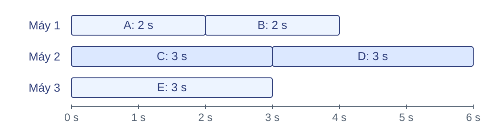
Gọi \(t_m\) là tổng thời gian các tác vụ giao cho máy \(m\).
\( T_{\text{pha}} = \max_m t_m = \max(4,\,6,\,3) = 6\,\text{s} \)
Các tác vụ đều sẵn sàng từ thời điểm 0; mỗi máy chạy từng tác vụ nối tiếp không nghỉ và không lỗi. Tổng tải máy 1 là 2+2=4 giây; máy 2 là 3+3=6 giây; máy 3 là 3 giây. Pha chỉ hoàn thành khi máy 2 xong, nên thời gian là max(4,6,3)=6 giây. Một tác vụ dài nhất chỉ mất 3 giây nhưng máy 2 phải chạy hai tác vụ như vậy. Nếu có khoảng chờ do phụ thuộc dữ liệu hoặc tài nguyên, phải đưa khoảng chờ vào lịch; không tự áp dụng công thức chỉ cộng thời gian tác vụ. Đây là ví dụ giả định cụ thể hóa nhu cầu cân bằng tải trong MMDS 2.5.2, trang 55–56.
Cộng 16 số trên 4 máy
\(\tau>0\): thời gian một phép cộng; mỗi máy nhận 4 số.
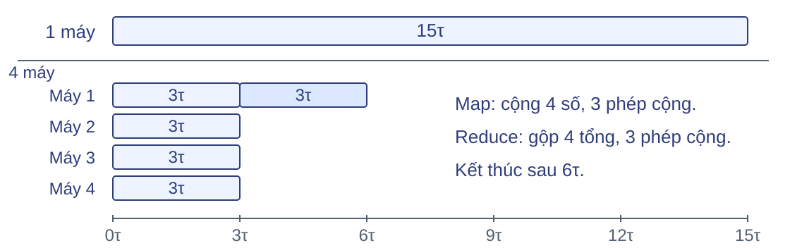
\(T_{\text{Map}}=3\tau,\qquad T_{\text{Reduce}}=3\tau\)
Dữ liệu đã nằm tại mỗi máy; một tác vụ Reduce gộp tuần tự bốn tổng.
Map: mỗi máy cộng 4 số, mất 3 phép cộng; Reduce: một máy cộng 4 tổng, mất 3 phép cộng — đây là ví dụ dùng cộng cục bộ trong Map (gộp cục bộ đã học). Dùng lại 16 số, chia 4 số cho mỗi máy. Cả bốn máy cộng cục bộ đồng thời trong 3τ; sau đó máy 1 gộp bốn tổng trong 3τ. Công việc kết thúc tại 6τ; không gọi khoảng từ 6τ đến 15τ là thời gian nhàn rỗi của công việc đã xong. Tổng số phép cộng vẫn là 15. Với n số chia đều cho P máy và một máy gộp tuần tự, T_P=(n/P−1)τ+(P−1)τ. Giả thiết số học chính xác, τ>0 không đổi, khởi tạo tổng bằng phần tử đầu, dữ liệu đã nằm trên máy; bỏ thời gian đọc/ghi, truyền và điều phối. Công thức này đánh giá cách gộp tuần tự đang minh họa; gộp theo cây có lịch khác. Với P=1, thu được (n−1)τ; với n=P, phần cục bộ không cần cộng. Dữ kiện tự chọn, liên hệ MMDS 2.5.2.
Chi phí đầu vào tác vụ C
Cùng một bài toán, cách tổ chức tác vụ quyết định lượng dữ liệu phải đọc.
I : tổng kích thước dữ liệu gốc các Map đọc.H : tổng kích thước dữ liệu trung gian các Reduce nhận.Quy ước: chi phí C là tổng kích thước đầu vào mọi tác vụ.
\( C = I + H = 100 + 40 = 140\,\text{MB} \)
Dùng C để so sánh tổng lượng đầu vào giữa các cách tổ chức cùng bài toán.
Nguồn: MMDS 2.5.1, tr. 54.
Vì sao đo C: khi có nhiều cách tổ chức cùng bài toán, ta cần một quy ước thống nhất để so sánh lượng dữ liệu mà các tác vụ phải đọc. Quy ước MMDS 2.5.1 (trang 54): chi phí một tác vụ là kích thước đầu vào của nó; chi phí thuật toán là tổng trên tất cả tác vụ. I là tổng dữ liệu gốc được các tác vụ Map đọc, H là tổng dữ liệu trung gian chuyển vào các tác vụ Reduce, C là tổng hai phần, đơn vị MB. Với giả thiết một công việc và Combine nằm trong Map ; giả sử không có tác vụ chạy lại, C = I + H = 100 + 40 = 140 MB. Nếu một dữ liệu được đọc bởi nhiều tác vụ, tính đầu vào của mỗi tác vụ. C gồm cả đọc tại máy; đầu ra trung gian được tính khi đi vào Reduce, không cộng lần hai; đầu ra cuối không được tính theo quy ước này (hình đã ghi chú). C chưa cho biết thời gian hoàn thành: còn cần tốc độ xử lý, cách giao tác vụ và băng thông — Slide MMDS 38–40 và Stanford CS246 67–70 dùng tổng đọc/ghi, cho I+2H+O; đó là quy ước khác. Các số 100 và 40 MB chỉ minh họa.
Băng thông và thời gian truyền
Để tính thời gian truyền, cần biết lượng dữ liệu qua đường truyền và tốc độ truyền.
V : lượng dữ liệu cần truyền (MB); B : lượng chuyển được mỗi giây (MB/s).λ : độ trễ khởi đầu (giây), trước khi dữ liệu bắt đầu tới.
Thông điệp
V = 100 MB
1 đường truyền
B = 50 MB/s
λ = 0,02 s
Máy nhận
chờ 2,02 s
\( T_{\text{truyền}} \approx \lambda + \dfrac{V}{B} = 0{,}02 + \dfrac{100}{50} = 2{,}02\,\text{s} \)
100 MB cần 2 giây truyền, cộng 0,02 giây khởi đầu.
Nguồn: Cornell CS5220, Intro to Message Passing.
C ở slide trước đếm đầu vào, nhưng để ước tính thời gian truyền ta cần lượng dữ liệu thực sự đi qua đường truyền đang xét — đó là V. Mô hình: thời gian truyền xấp xỉ λ + V/B, với λ là thời gian khởi đầu trước khi dữ liệu bắt đầu tới (bức hình cho thấy λ = 0,02 s trước luồng 100 MB), V = 100 MB là số byte trên đường, B = 50 MB/s nghĩa là mỗi giây chuyển được 50 MB. Như vậy 100 MB cần 2 giây để truyền, cộng thêm 0,02 giây khởi đầu là 2,02 giây. Nguồn Cornell dùng α+βM với β là nghịch đảo băng thông; đổi tên thành λ để không trùng chữ L của Reduce. Giả thiết một thông điệp truyền riêng, băng thông ổn định; chưa xét tranh chấp, chồng lấp hay truyền lại. Quy ước 1 MB = 10⁶ byte; phân biệt MB và Mb. Nguồn: https://www.cs.cornell.edu/courses/cs5220/2020fa/lec/2020-10-06-intro.html, mục mô hình alpha–beta.
Băng thông dùng chung
100 MB/s là băng thông của cả đường nối dùng chung: nhiều máy cùng gửi thì phải chia sẻ.
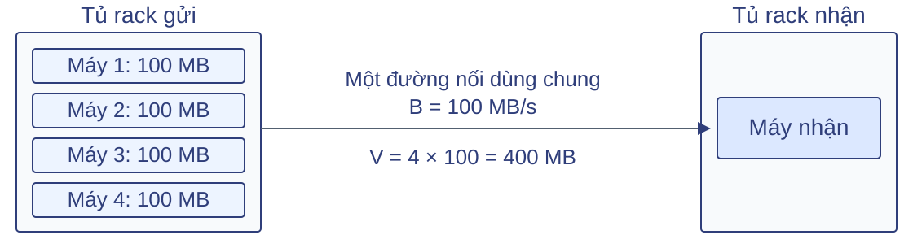
\( T \geq \dfrac{V}{B} = \dfrac{400}{100} = 4\,\text{s} \)
T là thời gian chuyển đủ 400 MB: cần ít nhất 4 giây, chưa kể độ trễ.
Xử lý gần dữ liệu có thể giảm số byte qua đường nối này, giảm nhu cầu băng thông.
Nguồn: MMDS 2.1.1, tr. 22–23.
Điểm mấu chốt: con số 100 MB/s là băng thông của cả đường nối dùng chung, không phải của mỗi máy. Bốn máy mỗi máy gửi 100 MB, tất cả phải đi qua cùng một đường nối sang rack khác, nên V = 4 × 100 = 400 MB như hình. Dù bốn máy gửi đồng thời, đường nối vẫn phải chuyển đủ 400 MB, vì thế T — thời gian chuyển đủ dữ liệu — ít nhất là V/B = 4 giây. Đây là cận dưới: độ trễ, tranh chấp khác và chi phí xử lý có thể làm lâu hơn, nên không nói chắc chắn 4 giây. Hệ quả thực hành: chuyển xử lý tới gần dữ liệu (cùng rack chứa dữ liệu) làm giảm số byte phải đi qua đường nối, nhờ đó giảm áp lực băng thông. Vị trí dữ liệu không tự làm mất việc đọc và xử lý tại máy. Nguồn: MMDS 2.1.1, trang 22–23; cấu hình và con số là ví dụ giả định.
Combine giảm lượng truyền
Combine gộp các lần xuất hiện cùng từ tại Map để gửi ít cặp hơn.
\( d_1 = \text{mèo chó mèo}, \quad d_2 = \text{chó chim} \)
Phương án Cặp đi qua đường truyền V (mỗi cặp 16 byte)
Không Combine d₁: (mèo,1), (chó,1), (mèo,1) 5 × 16 = 80 byte Có Combine d₁: (mèo,2), (chó,1) 4 × 16 = 64 byte
Lượng truyền giảm từ 80 xuống 64 byte (20%), nhưng Map phải cộng thêm.
Giả thiết: mỗi văn bản một tác vụ Map; mỗi cặp 16 byte; mọi cặp qua đường truyền đang xét đúng một lần; không tính phần đầu gói.
Nguồn: MMDS 2.2.4 và 2.5.1; dùng lại ví dụ đếm từ.
Vì sao dùng Combine: thay vì gửi từng lần xuất hiện, Map gộp các lần xuất hiện cùng từ ngay tại chỗ, nhờ đó gửi đi ít cặp hơn qua đường truyền. Dùng lại hai văn bản, mỗi văn bản một tác vụ Map. Không Combine có 5 cặp; có Combine thì văn bản thứ nhất còn (mèo,2),(chó,1), văn bản thứ hai còn (chó,1),(chim,1): tổng 4 cặp. Với giả thiết mỗi cặp 16 byte và mọi cặp đi qua đường truyền đang xét đúng một lần (không tính phần đầu gói), lượng truyền giảm từ 80 xuống 64 byte, tức 20%. Chốt: giảm 20% lượng truyền, nhưng Combine thêm phép cộng tại Map, nên để kết luận có lợi hay không ta cần tính thời gian toàn công việc — sẽ làm ở slide sau. Về C: số từ phải đọc không đổi nên I giữ nguyên; H giảm nên C = I + H cũng giảm. Nếu không có từ lặp trong từng tác vụ, Combine này không giảm số cặp. Phép cộng số đếm thỏa điều kiện kết hợp, giao hoán và giữ kiểu trung gian đã học. Nguồn: MMDS 2.2.4, trang 27–28 và 2.5.1, trang 54; 16 byte/cặp là quy ước minh họa.
Thời gian của cả công việc
\(T_P\) là thời gian từ lúc bắt đầu đến khi nhận đủ kết quả trên \(P\) máy.
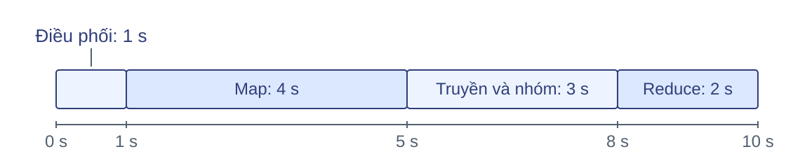
\(\begin{aligned}T_P &= T_{\text{điều phối}} + T_{\text{Map}} + T_{\text{truyền và nhóm}} + T_{\text{Reduce}}\\ &= 1+4+3+2=10\,\text{s}\end{aligned}\)
Mỗi pha tính đến khi máy cuối cùng hoàn tất; không cộng thời gian của mọi máy.
Nguồn: mô hình pha theo MMDS 2.2.2 và 2.5.2.
Sau khi biết Combine giảm lượng truyền nhưng tốn thêm thời gian Map, ta cần thước đo tổng thể để đánh giá: T_P — thời gian từ khi bắt đầu đến khi nhận đủ kết quả trên P máy, với P = 4. Hình cho thấy bốn pha nối tiếp: điều phối 0→1 giây, Map 1→5, truyền và nhóm 5→8, Reduce 8→10; các thời gian này đọc trực tiếp từ độ dài các đoạn trên trục thời gian. Mỗi thời gian pha là thời gian chờ pha đó hoàn tất — ví dụ Map kéo dài 4 giây cho đến khi tác vụ Map chậm nhất xong — chứ không phải cộng thời gian làm việc của mọi máy. Tổng thời gian của cả công việc là 10 giây; đây là con số dùng để so sánh với cách chạy trên một máy ở slide sau. Giả thiết: các pha nối tiếp, không chồng lấp, không lỗi; đọc/ghi đã tính trong các pha (đọc đầu vào trong Map, ghi đầu ra cuối trong Reduce, truyền/sắp xếp trong pha giữa). Hệ thống thực có thể chồng lấp hoạt động, khi đó cần mô hình chi tiết hơn. Nguồn: mô hình pha theo MMDS 2.2.2 và 2.5.2; thời gian là dữ kiện giả định. Lưu ý: các số 1/4/3/2 giây là dữ kiện giả định cho ví dụ minh họa, không suy ra từ ví dụ cộng 16 số và không phải kết quả benchmark.
Mức tăng tốc
Mức tăng tốc \(S_P\) cho biết dùng \(P\) máy giúp chạy nhanh gấp bao nhiêu lần.
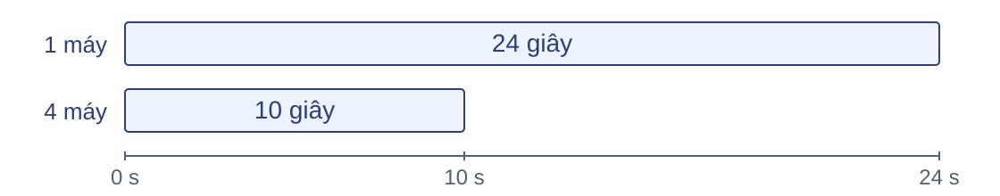
\( S_P = \dfrac{T_1}{T_P}, \qquad S_4 = \dfrac{24}{10} = 2{,}4 \)
Chạy 4 máy nhanh hơn 2,4 lần; có lợi về thời gian khi TP < T₁.
So sánh cùng đầu vào, cùng đầu ra, cùng phạm vi đo thời gian.
Nguồn: Cornell CS5220, Performance basics.
Vì sao đo mức tăng tốc: sau khi có T_P của cả công việc, ta muốn biết thêm máy có đáng không. Định nghĩa: T₁ là thời gian chạy trên 1 máy, T_P là thời gian chạy trên P máy, S_P = T₁/T_P là số lần tăng tốc. Hình minh họa: cùng một công việc, 1 máy mất 24 giây, 4 máy mất 10 giây (đúng như lịch vừa tính), nên S₄ = 24/10 = 2,4 lần. Kết luận: chạy 4 máy nhanh hơn 2,4 lần; có lợi về thời gian khi T_P < T₁. Chi phí truyền, gộp, điều phối và việc chia tải không đều có thể khiến thời gian không giảm tỷ lệ với số máy. Lưu ý giữ cùng đầu vào, đầu ra và phạm vi đo khi so sánh; đây là dữ kiện minh họa, không phải đo trên cụm máy thực. Nguồn: https://www.cs.cornell.edu/courses/cs5220/2020fa/lec/2020-09-08-perf-basics.html.
Câu hỏi kiểm tra
Đại lượng Dữ kiện
Điều phối 1s Thời gian Map mỗi máy 2s / 3s / 5s Lượng truyền V 120 MB Băng thông B 40 MB/s Reduce 2s Tuần tự T₁ 22s
Các pha nối tiếp; bỏ độ trễ và chi phí nhóm; đọc/ghi đã tính trong Map/Reduce; cùng đầu ra.
Câu hỏi:
Tính TMap và Ttruyền .
Tính thời gian toàn công việc TP và mức tăng tốc SP .
Combine giảm V còn 40 MB, pha Map tăng 1 s; các pha khác giữ nguyên. Tính T′P và thời gian tiết kiệm.
Nhắc ý nghĩa trước khi giải: T_P là thời gian từ khi bắt đầu đến khi nhận đủ kết quả trên P máy (đây P = 3), S_P là số lần tăng tốc so với 1 máy. Dữ kiện "tải Map 2s/3s/5s" là tổng thời gian các tác vụ Map trên từng máy — hãy nhớ T_Map là thời gian chờ pha Map hoàn tất, tức máy chậm nhất. Đáp án: T_Map = max(2,3,5) = 5 giây; bỏ độ trễ và chi phí nhóm nên truyền mất 120/40 = 3 giây; T_P = 1+5+3+2 = 11 giây; S_P = 22/11 = 2 lần. Câu 3: pha Map tăng từ 5 lên 6 giây, V còn 40 MB nên truyền mất 1 giây; T′_P = 1+6+1+2 = 10 giây, tiết kiệm 1 giây so với 11 giây; S′_P = 22/10 = 2,2 lần. Lợi ích ròng: bớt 2 giây truyền, thêm 1 giây Map. Sai lầm thường gặp: cộng tải ba máy để tính T_Map, hoặc bỏ quên pha điều phối. Dữ kiện giả định dùng để vận dụng các mô hình đã học.
5 · Hệ thống thực thi Map-Reduce
Đọc thêm
Thời gian chạy phụ thuộc vào cách giao tác vụ và chuyển dữ liệu giữa các máy.
Giao việc Chọn máy và tận dụng vị trí dữ liệu. Chuyển dữ liệu Đưa các phần trung gian tới đúng Reduce. Phục hồi Phát hiện lỗi và làm lại phần kết quả bị mất.
Nguồn: MMDS 2.2.5–2.2.6 (trang 28–30), http://www.mmds.org.
Phần trước đã tách thời gian tính toán, truyền và điều phối. Phần này giải thích các cơ chế tạo ra những chi phí đó. Ta dùng lại ví dụ đếm từ để theo đầu ra của từng Map đến Reduce, rồi xét máy hỏng khi công việc chưa kết thúc. Mô hình điều phối trong phần này theo MMDS; chi tiết Hadoop được ghi riêng khi cần. Nguồn: MMDS 2.2.5–2.2.6, trang 28–30; slide chính thức 23–27, http://www.mmds.org.
Từ phần dữ liệu đến tác vụ
Đọc thêm
Phần đầu vào (InputSplit) xác định dữ liệu một tác vụ Map phải đọc.
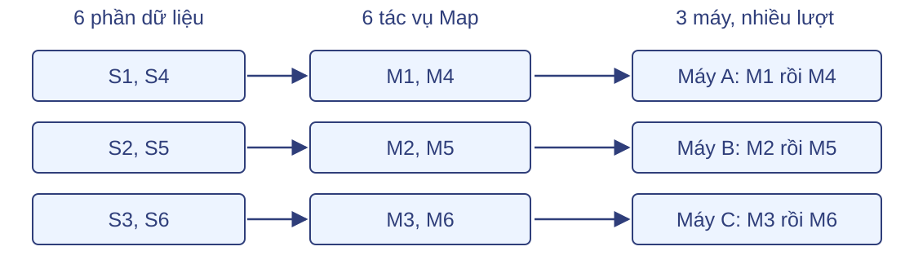
Ví dụ mỗi máy chạy một tác vụ mỗi lượt. Số Reduce do cấu hình chọn.
Nguồn: Apache Hadoop Tutorial, mục Job Input; MMDS 2.2.5.
Một tác vụ Map xử lý phần đầu vào được giao. Với Hadoop, InputFormat tạo các InputSplit và RecordReader đưa các bản ghi trong phần đó tới Map. Sáu phần S1 đến S6 tạo sáu tác vụ, dù chỉ có ba máy thực thi. Khi máy rảnh, nó có thể nhận tác vụ tiếp theo. Ví dụ minh họa một tác vụ mỗi máy mỗi lượt, không phải giới hạn của mọi hệ thống. Số Reduce được cấu hình riêng. Không suy số Map chỉ từ số máy hoặc mặc định một khối luôn là một phần đầu vào. Nguồn: MMDS 2.2.5; Apache Hadoop MapReduce Tutorial, Job Input.
HDFS hỗ trợ Map-Reduce
Đọc thêm
Hệ tệp phân tán Hadoop (HDFS) cung cấp lớp lưu trữ cho đầu vào và kết quả.
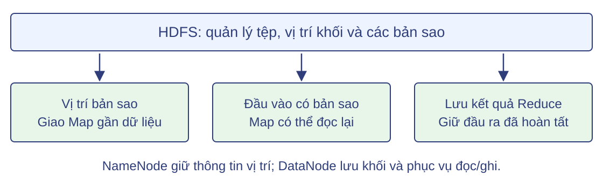
HDFS quản lý dữ liệu. Hệ thống MapReduce phân chia, lập lịch và chạy lại tác vụ.
Nguồn: MMDS 2.1.2, 2.2.5; Apache Hadoop, HDFS Architecture.
HDFS chia tệp thành khối và lưu các bản sao theo cấu hình. NameNode quản lý thông tin tệp và vị trí khối; DataNode giữ khối và phục vụ đọc ghi. MapReduce dùng thông tin vị trí để ưu tiên chạy Map gần một bản sao. Khi phải chạy lại Map, hệ thống còn đầu vào để đọc nếu một bản sao khác vẫn truy cập được. Kết quả Reduce đã hoàn tất cũng được lưu trên HDFS, nên mất máy tính toán không đồng nghĩa mất kết quả. Đầu ra Map trung gian trong mô hình đang học nằm trên đĩa cục bộ, không tự được bảo vệ như tệp HDFS. Nguồn: MMDS 2.1.2, 2.2.5; https://hadoop.apache.org/docs/r3.4.2/hadoop-project-dist/hadoop-hdfs/HdfsDesign.html.
Giao Map gần nơi lưu dữ liệu
Đọc thêm
Ưu tiên máy có bản sao; nếu không phù hợp, xét máy cùng tủ rack rồi xa hơn.
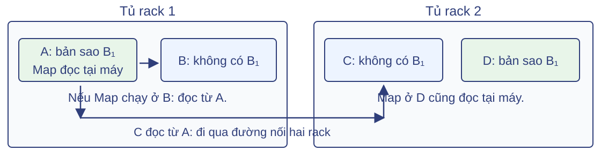
A và D đều có thể đọc B₁ tại máy. Các bản sao giúp chọn nơi đọc;
Nguồn: MMDS 2.1.2, 2.2.5; bài báo MapReduce (OSDI 2004), mục 3.4.
Trong hình, A và D giữ hai bản sao của cùng khối B1. Nếu Map chạy tại một trong hai máy này, nó đọc cục bộ. Map ở B phải đọc từ A qua mạng trong rack; C đọc bản ở A phải dùng đường nối giữa hai rack. Bộ lập lịch cân nhắc vị trí và tài nguyên sẵn có, không bảo đảm mọi Map đều đọc cục bộ. Dữ liệu có bản sao không có nghĩa đếm cùng một phần nhiều lần: bản sao thuộc lưu trữ, tác vụ thuộc tính toán. Nguồn: MMDS 2.1.2 và 2.2.5; Dean–Ghemawat 3.4.
Chia đầu ra Map theo hàm phân phối
Đọc thêm
Hai văn bản, hai Map, hai Reduce; tạm bỏ Combine để thấy từng cặp.
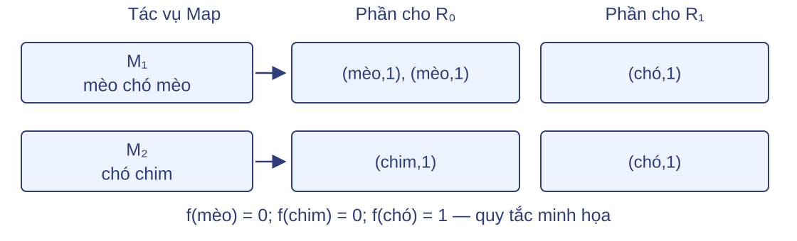
Mỗi Map lưu các phần trung gian trên đĩa cục bộ.
Nguồn: MMDS 2.2.5; bài báo MapReduce, mục 3.1 (trang 4).
Dùng lại d1 gồm mèo chó mèo và d2 gồm chó chim. Quy tắc phân phối minh họa là f(mèo)=0, f(chim)=0, f(chó)=1. Mọi Map dùng cùng quy tắc, nên cặp cùng khóa đi tới cùng Reduce. Một Map chia đầu ra thành R phần; đây là các phần logic, không khẳng định Hadoop tạo đúng R tệp vật lý riêng biệt. Tiến trình điều phối giữ thông tin vị trí, không thu toàn bộ dữ liệu trung gian về nó. Tiếp theo, mỗi Reduce dùng những vị trí đó để lấy phần của mình. Nguồn: MMDS 2.2.5; Dean–Ghemawat 3.1.
Shuffle: mỗi Reduce lấy phần của mình
Đọc thêm
Shuffle chuyển các phần trung gian tới tác vụ Reduce đã được chỉ định.
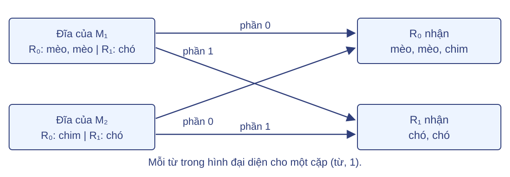
R₀ nhận nhiều khóa; mọi cặp cùng khóa vẫn về cùng một Reduce.
Nguồn: MMDS slide 23, 2.2.5; Apache Hadoop Tutorial, phần Shuffle and Sort.
R0 lấy phần 0 từ M1 và M2; R1 lấy phần 1 từ cả hai. Đây là bước truyền dữ liệu qua mạng giữa các máy nếu bên gửi và nhận không cùng máy. Có nhiều khóa thuộc một Reduce nên lấy đủ dữ liệu chưa thay thế bước nhóm theo khóa. Trong Hadoop, lấy và ghép dữ liệu có thể chồng lấp; mô hình cộng thời gian các pha nối tiếp ở phần trước là giả thiết đơn giản hóa để tính chi phí. Nguồn: MMDS slide 23; Apache Hadoop MapReduce Tutorial, Shuffle và Sort.
Nhóm theo khóa để Reduce đọc lần lượt
Đọc thêm
Hệ thống sắp xếp và ghép dữ liệu; hàm Reduce xử lý từng nhóm khóa.
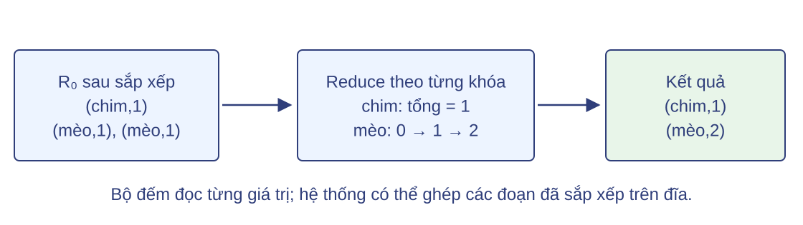
Với đếm từ, Reduce chỉ cần một biến tổng cho khóa đang xử lý.
Nguồn: bài báo MapReduce, mục 3.1 (trang 4); Apache Hadoop Tutorial, Shuffle and Sort.
Danh sách giá trị theo khóa trong đặc tả là đối tượng logic. Giao diện có thể cung cấp từng giá trị để hàm Reduce đọc lần lượt. Trong ví dụ, nhóm mèo có hai số 1; biến tổng đi từ 0 tới 1 rồi 2. Nếu dữ liệu trung gian không vừa bộ nhớ, hệ thống có thể dùng sắp xếp và ghép trên đĩa. Việc này có chi phí đọc/ghi, đã được tính trong pha tương ứng khi dùng mô hình thời gian toàn công việc. Không suy ra mọi hàm Reduce đều chỉ cần một biến hoặc mọi đầu ra được sắp thứ tự toàn cục. Nguồn: Dean–Ghemawat 3.1, trang 4; Apache Hadoop Tutorial, Shuffle/Sort.
Theo dõi trạng thái và giao việc tiếp
Đọc thêm
Tiến trình điều phối (Master) theo dõi mỗi tác vụ và máy thực thi nó.
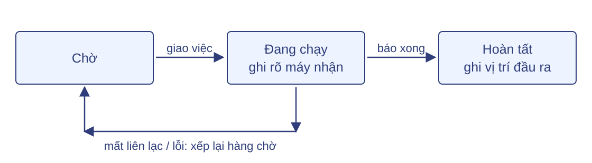
Máy thực thi báo tiến độ và kết quả; máy rảnh có thể nhận tác vụ tiếp theo.
Nguồn: MMDS 2.2.5–2.2.6.
Tiến trình điều phối giữ trạng thái tác vụ, nơi thực thi và vị trí đầu ra. Nó kiểm tra liên lạc định kỳ; khi một máy không trả lời trong thời hạn, tác vụ có thể được giao lại ở máy khác. Hình thể hiện tác vụ đang chạy trở về chờ. Trường hợp Map đã hoàn tất nhưng mất tệp trung gian cần xét thêm nơi lưu dữ liệu ở các trang sau. Master ở đây là vai trò điều phối MapReduce theo mô hình MMDS, khác NameNode quản lý tệp và khối HDFS. Nguồn: MMDS 2.2.5–2.2.6.
Nơi lưu dữ liệu quyết định cách phục hồi
Đọc thêm
Dữ liệu Nơi lưu Khi mất máy lưu
Đầu vào HDFS có bản sao Đọc bản sao khác Đầu ra Map trung gian Đĩa cục bộ Chạy lại Map để tạo lại Đầu ra Reduce đã hoàn tất HDFS Giữ kết quả đã công bố
Xét hệ tệp dùng bản sao; còn ít nhất một bản sao HDFS truy cập được.
Nguồn: MMDS 2.2.5–2.2.6; bài báo MapReduce, mục 3.3.
Đầu vào và đầu ra cuối được lưu trên hệ tệp phân tán; trung gian Map thường nằm ở đĩa cục bộ. Do đó hai tác vụ cùng báo hoàn tất chưa có cùng cách phục hồi: mất đầu ra Map có thể buộc tính lại, còn kết quả Reduce trên hệ tệp phân tán được giữ nếu bản sao vẫn truy cập được. Đây là mô hình lưu trữ của MMDS và MapReduce gốc, dùng HDFS làm ví dụ hệ tệp. Không khẳng định mọi hệ thống đều lưu trung gian giống nhau. Hai trang tiếp theo áp dụng bảng này vào Map và Reduce. Nguồn: MMDS 2.2.5–2.2.6; Dean–Ghemawat 3.3.
Máy Map hỏng: tạo lại đầu ra trung gian
Đọc thêm
M₁ đã xong trên máy A, nhưng Reduce chưa lấy phần dữ liệu cần từ A.
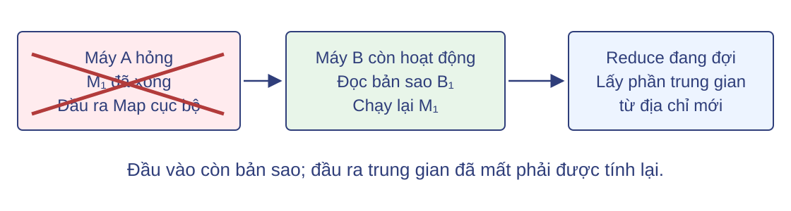
Điều phối viên đưa M₁ về chờ, giao máy khác chạy lại và báo vị trí đầu ra mới.
Nguồn: MMDS 2.2.6; bài báo MapReduce, mục 3.3 (trang 4–5).
M1 đã xử lý đầu vào nhưng sản phẩm của nó nằm trên đĩa cục bộ máy A. Khi A không truy cập được, Reduce chưa lấy phần cần thiết không thể tiếp tục bằng địa chỉ cũ. Hệ thống giao lại M1 cho B, đọc một bản sao đầu vào và tạo đầu ra trung gian mới. Tiến trình điều phối báo vị trí mới cho Reduce. Với hàm xác định, Reduce đã đọc đủ phần cũ không cần đọc lần nữa chỉ vì Map được chạy lại; Reduce đã hoàn tất cũng không bị buộc chạy lại trong tình huống này. Nguồn: MMDS 2.2.6, trang 30; Dean–Ghemawat 3.3.
Máy Reduce hỏng: làm lại tác vụ chưa xong
Đọc thêm
R₀ chưa hoàn tất; R₁ đã công bố kết quả O₁ lên HDFS.
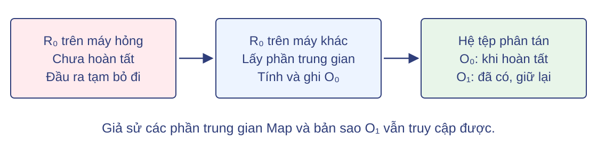
R₀ mới lấy lại các phần trung gian và tính Reduce lại; chưa cần chạy lại các Map.
Nguồn: MMDS 2.2.6; bài báo MapReduce, mục 3.3 (trang 4–5).
Khi máy chạy R0 hỏng giữa chừng, phần kết quả tạm chưa được chấp nhận phải bỏ. R0 được thực thi lại ở máy khác: nó lấy lại các phần trung gian và chạy lại phép tính Reduce. Vì đầu ra Map trong ví dụ còn truy cập được, các Map không phải chạy lại. O1 của R1 đã hoàn tất nằm trên HDFS và có bản sao, nên được giữ. Nếu đồng thời mất đầu ra Map cần dùng, hệ thống phải tạo lại phần đó trước. Nguồn: MMDS 2.2.6; Dean–Ghemawat 3.3.
Một tác vụ có thể có nhiều lần thực thi
Đọc thêm
Tình huống Cách xử lý
Lỗi hoặc mất liên lạc Giao lại tác vụ trên máy khác Một tác vụ chạy quá chậm Có thể chạy thêm một bản dự phòng
Mỗi tác vụ logic có một mã; các lần thực thi có mã riêng.
Hệ thống chấp nhận một kết quả cho tác vụ, không cộng hai bản kết quả.
Xét hàm xác định, dữ liệu đầu vào không đổi, đầu ra qua cơ chế của hệ thống.
Nguồn: bài báo MapReduce, mục 3.3 (trang 4–5) và 3.6.
Chạy lại sau lỗi và chạy dự phòng để giảm thời gian chờ là hai lý do khác nhau để cùng tác vụ có nhiều lần thực thi. Các bản dự phòng có thể chạy đồng thời, vì vậy không bảo đảm mã người dùng chỉ được thực thi một lần. Hệ thống dùng nhận diện tác vụ và cơ chế công bố đầu ra để không tính hai bản kết quả như hai đóng góp độc lập. Hàm xác định giúp các lần chạy từ cùng đầu vào cho cùng kết quả. Cam kết đầu ra không tự áp dụng cho tác động bên ngoài như gửi thư hoặc ghi tùy ý vào dịch vụ khác. Nguồn: Dean–Ghemawat 3.3 và 3.6.
Phạm vi chống chịu lỗi
Đọc thêm
Sự cố Khả năng phục hồi
Một máy thực thi hỏng Làm lại tác vụ hoặc đầu ra trung gian bị mất Một tủ rack không truy cập được Dùng bản sao ở rack khác và giao lại tác vụ Master hỏng trong mô hình MMDS Công việc phải được khởi động lại
Phục hồi cần đầu vào còn đọc được và máy thay thế.
Nguồn: MMDS 2.1, 2.2.6; Dean–Ghemawat 3.3.
Phục hồi phụ thuộc tài nguyên và dữ liệu còn lại. Bản sao ở các rack khác nhau giúp tránh mất toàn bộ một khối khi một rack hỏng, nhưng không bảo đảm sống sót khi tất cả bản sao đều mất. Mô hình MMDS giả định một Master; nếu nó hỏng, công việc phải khởi động lại. Không dùng kết luận này như mô tả cố định của mọi phiên bản Hadoop, vì hệ thống hiện đại có các chính sách điều phối và phục hồi khác. Trong phần thực hành, ta sẽ chỉ rõ chế độ chạy để không nhầm một lần chạy cục bộ với cụm chịu lỗi. Nguồn: MMDS 2.1 và 2.2.6; Dean–Ghemawat 3.3.
Câu hỏi kiểm tra
Đọc thêm
Câu hỏi: áp dụng vào ví dụ hai Map, hai Reduce vừa xét.
R₀ và R₁ lần lượt lấy phần nào từ M₁ và M₂? M₁ đã xong trên A; A hỏng trước khi R₀ lấy dữ liệu. Phần nào phải tính lại? R₁ đã công bố O₁, rồi máy chạy R₁ hỏng. Có cần chạy lại R₁ nếu HDFS còn bản sao O₁? Nguồn: tổng hợp MMDS 2.2.5–2.2.6; bài báo MapReduce mục 3.3; http://www.mmds.org.
R0 lấy phần 0 của M1 và M2, gồm hai cặp mèo và một cặp chim. R1 lấy phần 1 của hai Map, gồm hai cặp chó. Khi A hỏng, đầu ra cục bộ của M1 không truy cập được nên M1 phải được chạy lại từ bản sao đầu vào; sau đó R0 lấy dữ liệu ở vị trí mới. R1 đã hoàn tất không cần chạy lại khi O1 còn trên HDFS. Các câu trả lời phải viện dẫn vị trí dữ liệu và trạng thái công bố, không chỉ nói chung là hệ thống có bản sao. Phần tiếp theo dùng Hadoop để thực thi mã Python và kiểm tra kết quả đếm từ.
6 · Thực hành Hadoop với Docker Compose
Biến mô hình Map-Reduce thành một chương trình chạy thật trên cụm nhỏ.
Mục đích Chạy bài đếm từ trên cụm Hadoop 6 container, một máy. Kết quả mong đợi chim 1 · chó 2 · mèo 2 — đúng như đã tính trên giấy. Chuẩn bị Cài Docker trước lớp; phần 5 là Đọc thêm, không tiên quyết.
Mã lab: Hướng dẫn thực hành · Tải mã Docker Compose .
Phần 2 xây dựng mô hình Map-Reduce, phần 4 tính chi phí của nó; phần này đưa cả hai vào một chương trình thật. Ta dựng cụm Hadoop nhỏ bằng Docker Compose, viết hàm Map và Reduce bằng Python, nộp công việc qua Hadoop Streaming và đối chiếu kết quả với đếm thủ công đã làm ở phần 2. Phần 5 về hệ thống thực thi là Đọc thêm, không phải tiên quyết. Toàn bộ mã nằm trong examples/lec-02/hadoop-compose; hãy tải ZIP và cài Docker trước khi đến lớp.
Cụm Hadoop trên một máy
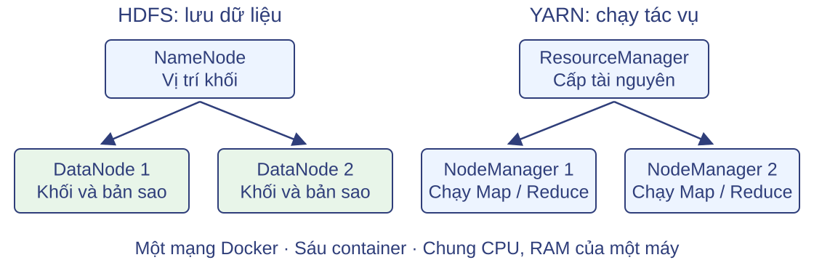
NameNode lưu vị trí khối; 2 DataNode lưu khối và bản sao.
Nguồn: Apache Hadoop, docker-compose mẫu chính thức; compose.yaml của lab.
Cụm gồm 6 Docker container trên một mạng bridge: NameNode, 2 DataNode, ResourceManager, 2 NodeManager. NameNode quản lý không gian tên và vị trí khối; DataNode giữ khối với replication 2. ResourceManager điều phối tài nguyên YARN; NodeManager chạy các tiến trình MapReduce. Cần phân biệt hai loại container: container Docker là tiến trình cô lập trên máy host, còn container YARN là đơn vị tài nguyên mà NodeManager cấp cho ApplicationMaster, Map hoặc Reduce — số container YARN thay đổi theo job. Hai DataNode và hai NodeManager là các container khác nhau trên cùng một host, không phải hai máy vật lý.
Khởi động bằng Docker Compose
Cài Docker Engine/Desktop và Compose plugin trước; giải nén bộ mã rồi vào thư mục lab.
cd hadoop-compose
docker compose pull
docker compose up -d
docker compose pspull tải image apache/hadoop:3.4.2-lean từ Docker Hub;up -d tạo 6 container nền; ps liệt kê trạng thái.
Nguồn: Docker Hub apache/hadoop; tài liệu Docker Compose chính thức.
Ba lệnh theo thứ tự: pull tải image đã công bố về máy; compose.yaml cố định phiên bản bằng mã băm của image; up -d tạo và khởi động 6 container ở chế độ nền theo compose.yaml; ps cho thấy container nào đang chạy. Không cần cài Java hay Hadoop trên máy local vì mọi thứ nằm trong image. Thời gian chờ cụm sẵn sàng phụ thuộc máy.
Kiểm tra cụm đã sẵn sàng
docker compose exec namenode hdfs dfsadmin -report
docker compose exec namenode yarn node -listDấu hiệu sẵn sàng: 2 DataNode ở trạng thái Live ,RUNNING .
Web UI: HDFS NameNode http://127.0.0.1:19870 · YARN http://127.0.0.1:18088.
dfsadmin -report hỏi NameNode về các DataNode: cần thấy đúng 2 node Live. yarn node -list hỏi ResourceManager: cần thấy 2 NodeManager RUNNING. Container đang chạy chưa đủ — daemon có thể đã khởi động nhưng chưa đăng ký với NameNode hoặc ResourceManager, nên phải kiểm tra bằng hai lệnh này trước khi nộp job. Hai giao diện web cũng xác nhận cùng thông tin: 19870 cho HDFS (tab Datanodes), 18088 cho YARN (mục Nodes). Nếu một node chưa lên, chờ vài giây rồi chạy lại lệnh kiểm tra.
Hai văn bản trên HDFS
d1.txtmèo chó mèo d2.txtchó chim
Trong cấu hình mẫu: hai tệp → hai Map. Hai bản sao không làm tăng số từ.
Script run-job.sh tự đưa data/*.txt lên HDFS bằng hdfs dfs -put.
Đây chính là hai văn bản đã đếm thủ công ở phần 2, nên kết quả mong đợi đã biết: chim 1, chó 2, mèo 2. Mapper tách theo whitespace và giữ nguyên chữ hoa, dấu câu — giới hạn được ghi rõ trong README. Hai tệp đều nhỏ hơn minsplit 128 MiB nên mỗi tệp thành một phần đầu vào, tức 2 Map. Replication 2 tạo bản sao khối trên cả hai DataNode nhưng chỉ phục vụ độ bền và vị trí đọc, không làm tăng số lần đếm. Script tạo thư mục đầu vào riêng cho mỗi lần chạy rồi đưa hai tệp lên HDFS.
Hàm Map bằng Python
import sys
# Mỗi từ phân cách bởi khoảng trắng đóng góp một lần xuất hiện.
for line in sys.stdin:
for word in line.split():
print(f"{word}\t1")Đọc từng dòng từ stdin; với mỗi từ in word TAB 1 ra stdout.
Tệp đầy đủ: mapper.py trong bộ lab.
Toàn bộ mapper là 6 dòng này. Hadoop Streaming cấp từng dòng văn bản cho tiến trình Python qua stdin — mapper không nhận cả tệp và không tự tải dữ liệu; việc chia phần đầu vào và cấp bản ghi là việc của hệ thống. Với mỗi từ, chương trình in một cặp khóa-giá trị word TAB 1 ra stdout theo giao thức Streaming. Đây đúng là hàm Map của mô hình phần 2: mỗi lần xuất hiện đóng góp một cặp. Đầu ra của mapper này chính là dữ liệu mà slide sau theo dõi qua giao diện Streaming.
Giao diện giữa Python và Hadoop
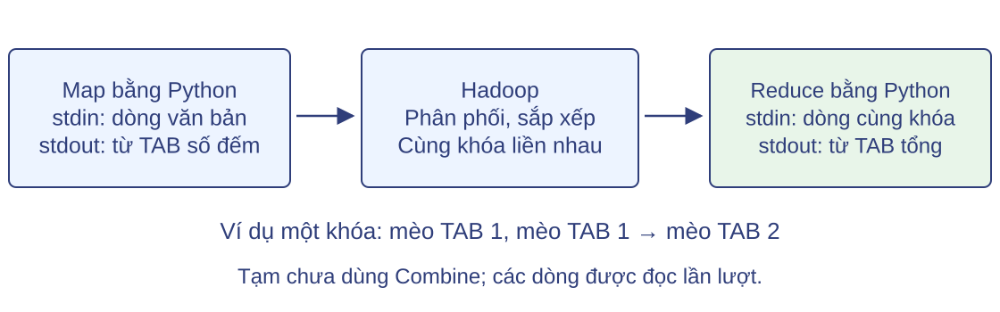
Mapper in mèo TAB 1, mèo TAB 1…; Hadoop gom các dòng cùng khóa liền nhau rồi đưa vào reducer.
Nguồn: Apache Hadoop Streaming 3.4.2; MMDS 2.2 (dạng hàm Reduce nhận danh sách giá trị).
Streaming quy hàm Map/Reduce về văn bản qua ba kênh: stdin của mapper nhận từng dòng; stdout của mapper phát các cặp word TAB count; Hadoop phân phối theo khóa và sắp xếp, rồi đưa các dòng cùng khóa liền nhau vào stdin của reducer. Dạng hàm Reduce trong MMDS nhận danh sách giá trị của một khóa; ở đây danh sách đó được hiện thực bằng các dòng liền kề — Hadoop lo việc chuyển và gom, chương trình chỉ đọc tuần tự. Với bài đếm từ, reducer chỉ cần giữ tổng của nhóm đang đọc.
Hàm Reduce và Combine bằng Python
import sys
from itertools import groupby
# Hadoop đưa các dòng cùng khóa liền nhau; đọc nhóm lần lượt.
pairs = (line.rstrip("\n").split("\t", 1) for line in sys.stdin)
for word, group in groupby(pairs, key=lambda pair: pair[0]):
total = sum(int(value) for _, value in group)
print(f"{word}\t{total}")Cộng giá trị trong nhóm; đầu vào và đầu ra cùng dạng word TAB count.
Tệp đầy đủ: reducer.py trong bộ lab.
groupby gom các dòng liền nhau cùng khóa; tổng được cộng lần lượt qua generator, không tạo danh sách cả nhóm trong RAM. Phép cộng có tính kết hợp, giao hoán và đầu vào/đầu ra cùng kiểu (word, count), nên cùng tệp này dùng được làm combiner: chạy trên đầu ra Map để giảm dữ liệu truyền qua shuffle mà kết quả cuối không đổi. Combiner là tùy chọn — Hadoop có thể chạy nó nhiều lần hoặc không chạy, kết quả được bảo toàn nhờ tính kết hợp, giao hoán và kiểu dữ liệu phù hợp. Dòng cuối tệp hoặc input rỗng: khi stdin kết thúc, nhóm cuối vẫn được xử lý rồi vòng lặp dừng tự nhiên.
Nộp công việc Map-Reduce
docker compose exec -T namenode bash /work/run-job.shBốn dòng khai báo trong script (cùng một lệnh hadoop jar):-files /work/mapper.py,/work/reducer.py · -mapper 'python3 mapper.py'-combiner 'python3 reducer.py' · -reducer 'python3 reducer.py'
Script đầy đủ: run-job.sh — tự tạo input, put, chọn output mới chưa tồn tại, 2 Reduce, minsplit 128 MiB.
Một lệnh duy nhất nộp job; bốn dòng trên là các tham số của cùng lệnh hadoop jar Streaming trong run-job.sh, không phải các lệnh độc lập. Thứ tự script làm việc: chờ thoát safe mode, kiểm tra 2 DataNode Live và 2 NodeManager RUNNING, tạo thư mục input mới rồi put hai tệp lên HDFS, chọn đường dẫn output chưa tồn tại (mỗi lần chạy một tên riêng, không mkdir output trước job), sau đó mới nộp lệnh hadoop jar với -D và -files đặt trước input/output. -files gửi mapper.py và reducer.py tới các NodeManager, nên hệ thống phân phối mã đến nơi chạy tác vụ — không cần đăng nhập từng worker để chép mã. Script cũng đặt mapreduce.job.reduces=2 và minsplit 128 MiB. ApplicationMaster do ResourceManager cấp tài nguyên sẽ lo phần còn lại.
Đối chiếu kết quả
chim 1
chó 2
mèo 2Script in đường dẫn output; kết quả nằm trong output/part-* —
Trạng thái job: SUCCEEDED trên Web UI YARN (127.0.0.1:18088).
Đây là đầu ra in bởi run-job.sh từ một lần chạy thật: chim 1, chó 2, mèo 2 — khớp đếm thủ công ở slide đầu phần. Với 2 Reduce, HDFS output chứa hai tệp part-*; mỗi tệp gồm các khóa được giao cho Reduce đó, gộp lại cho kết quả toàn bài. Trong lần chạy mẫu, một tệp có ba khóa và một tệp rỗng: hàm băm mặc định khác quy tắc phân phối minh họa trước đó. Hai Reduce không bảo đảm tải cân bằng. Thứ tự các dòng trong một tệp là thứ tự sau sắp xếp trong phạm vi Reduce; với nhiều Reduce, thứ tự toàn cục của các khóa không được bảo đảm, nên đừng xem thứ tự tệp là bằng chứng gì. Trạng thái SUCCEEDED xác nhận job hoàn tất trên YARN.
Quan sát các bộ đếm
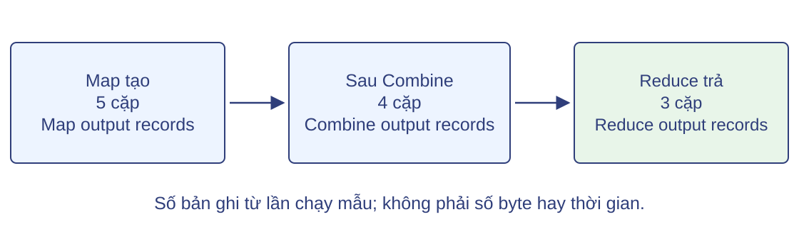
Lần chạy kiểm thử: 5 cặp Map → 4 cặp Combine → 3 cặp Reduce.
Nguồn: bộ đếm trong log lệnh Hadoop Streaming, lần kiểm thử của bộ mã.
Hadoop đếm số bản ghi ở từng pha. Trong lần chạy kiểm thử này: 2 bản ghi input, 5 cặp đầu ra Map, 4 cặp sau Combine, 3 nhóm vào Reduce, 3 cặp đầu ra với 3 khóa. Combine giảm 5 xuống 4 vì hai cặp mèo liền nhau được gộp — số lần Combine chạy không cố định giữa các lần nộp job, nên đừng coi 5→4 là bất biến. Bộ đếm đo số cặp và số byte, không phải thời gian; không suy ra Combine làm giảm 20% thời gian chạy hay con số tương tự. Đây là công cụ kiểm chứng từng pha của mô hình đã học.
Câu hỏi kiểm tra
Câu hỏi: giải thích kết quả và cách kiểm chứng.
1 Xóa khai báo Combiner trong script — kết quả đếm có đổi không? 2 Với replication 2, vì sao tổng số từ đếm được vẫn là 5 chứ không phải 10? 3 Bằng chứng nào cho thấy job đã chạy trên YARN và cho kết quả đúng?
Nguồn: bài đếm từ ở phần mô hình; Apache Hadoop Streaming 3.4.2.
Đáp án: (1) Không — phép cộng kết hợp và giao hoán, Combine chỉ tối ưu truyền dữ liệu, kết quả cuối như nhau. (2) Replication là cơ chế lưu trữ tạo bản sao khối để đọc và độ bền; mỗi từ vẫn chỉ được một Map xử lý một lần, nên tổng là 5. (3) Hai node đăng ký chưa đủ — cần job ở trạng thái SUCCEEDED trên YARN, bộ đếm các pha hợp lệ, và output/part-* cho đúng chim 1, chó 2, mèo 2. Ba câu này ôn lại mô hình phần 2 và thông tin HDFS vừa có trong phần 6; phần 7 sẽ tổng kết bài học và vận dụng vào bài toán lớn hơn.